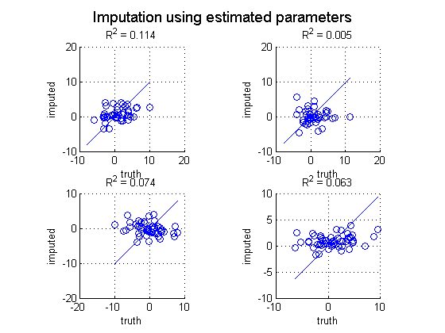

Imputation for a mixture of Gaussians
PMTKneedsStatsToolbox regstats
Contents
% This file is from pmtk3.googlecode.com
requireStatsToolbox
Make data
setSeed(1); d = 10; n = 100; pcMissing = 0.5; K = 5; mu = rand(d,K); mixweight = normalize(rand(1,K)); Sigma = zeros(d,d,K); for k=1:K Sigma(:,:,k) = randpd(d); end trueModel = struct('mu', mu, 'Sigma', Sigma, 'mixweight', mixweight); [Xfull] = mixGaussSample(mu, Sigma, mixweight, n); missing = rand(n,d) < pcMissing; Xmiss = Xfull; Xmiss(missing) = NaN;
Impute
% Impute using true model %[XimputeTruth] = gaussImpute(trueModel, Xmiss); % Fit a single Gaussian [model, LLtrace] = gaussMissingFitEm(Xmiss, 'verbose', false); % Impute using learning model [XimputeEM] = gaussImpute(model, Xmiss);
Plotting
Xmiss0 = Xmiss; Xmiss0(isnan(Xmiss0))=0; ndx = 1:20; % just plot first 20 rows %hintonDiagram(Xmiss0(ndx,:)); title('observed data'); %printPmtkFigure('mixGaussImputeObs'); % Scatter plots figure; nr = 2; nc = 2; for j=1:(nr*nc) subplot(nr, nc, j); miss = find(isnan(Xmiss(:,j))); scatter(Xfull(miss, j), XimputeEM(miss,j)) xlabel('truth'); ylabel('imputed'); mini = min(Xfull(:,j)); maxi = max(Xfull(:,j)); line([mini maxi], [mini maxi]); axis square grid on stats = regstats(Xfull(miss,j), XimputeEM(miss,j)); r = stats.rsquare; title(sprintf('R^2 = %5.3f', r)) end suptitle('Imputation using estimated parameters') printPmtkFigure('mixGaussImputeScatterEm');